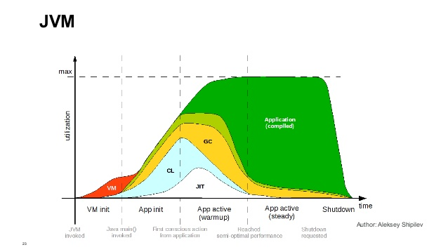
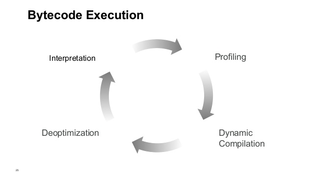

public int addAll(int max) {
int accumulator = 0;
for (int i = 0; i < max; ++i) {
accumulator = add(accumulator,i);
}
return accumulator;
}
public int add(int x, int y) {
return x + y;
}
public class Unrolling {
public static final String[] OPTIONS = { "YES" , "NO", "MAYBE", "NEVER" };
public void iterate() {
for (String option : OPTIONS) {
process(option);
}
}
protected void process(String option) {
System.out.println(option);
}
}
public void lockedStuff() {
for (String s : OPTIONS) {
doStuff(s);
}
}
private synchronized void doStuff(String s) {
// Thread unsafe code go here :)
}
public void lockedStuff() {
synchronized(this) {
for (String s : OPTIONS) {
doStuff(s);
}
}
}
public void overSync() {
java.util.List l = new java.util.ArrayList();
for (String s : OPTIONS)
l.add(doMoreStuff(s));
}
public void lockedStuff() {
synchronized(this) {
for (String s : OPTIONS) {
doStuff(s);
}
}
}
public void foo() {
Point p = new Point(1, 10);
doCompute(p);
}
protected void doCompute(Point p) {
System.out.println("Computing on " + p.x + ":" + p.y);
doMoreCompute(p);
}
protected void doMoreCompute(Point p) {
System.out.println("More Computing on " + p.x + ":" + p.y);
}
public void foo() {
System.out.println("Computing on " + 1 + ":" + 10);
System.out.println("More Computing on " + 1 + ":" + 10);
}
-XX:+PrintCompilation
Print methods as the JIT: class + name + size
48 1 java.lang.String::hashCode (55 bytes)
51 2 java.lang.String::indexOf (70 bytes)
57 3 inlining.Inline::add (4 bytes)
57 4 % inlining.Inline::addAll @ 4 (23 bytes)
-XX:+UnlockDiagnosticVMOptions -XX:+PrintInlining
@ 66 java.lang.String::indexOfSupplementary (71 bytes) too big
@ 11 inlining.Inline::add (4 bytes) inline (hot)
@ 19 java.lang.Math::min (11 bytes) (intrinsic)